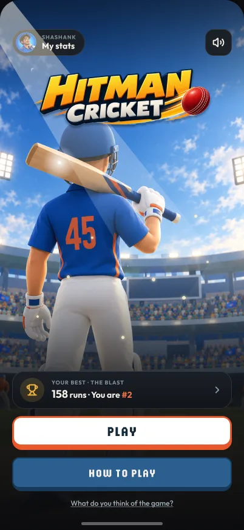

Competing with a purposeLeaderboards
The board is what turned a toy into a game. Fair ranking, career ladders, and a place that’s never a guess — the reason players had something to beat.
Writing now
My own product · 2026
A cricket game for the phone browser. I designed it, built it with Claude Code and shipped it on my own — then kept going for seven weeks, because people kept coming back. These are the stories behind it.

The case studies
One is ready to read. The rest are being written, in the order they mattered to the game.
The board is what turned a toy into a game. Fair ranking, career ladders, and a place that’s never a guess — the reason players had something to beat.
No sign-up, and Safari forgets after a week. A career key nobody saved, then a password asked for at the right moment.
A 3D locker room where kits and bats are earned, never bought. Bat skins drawn flat in Figma and wrapped onto a 3D blade, and an unlock you’d want to show someone. Built in three days.
Every feature added a button. How the screens drifted into clutter, and the redraw that pulled them back.
A ten-over mode with a field you can see. Demand tested before a line of it was built: 8 of 18 pressed I’M EXCITED.
A batter built in code with no character pack: his stance, two-handed strokes, and each shot’s way back to the guard.
Three batters and no over limit, with bowling that changes every ten overs. Designing a long game for a two-minute habit.
The build
Commits each week in green, and what reached players underneath. I designed in Figma, directed Claude Code, and tested every change on my own phone.